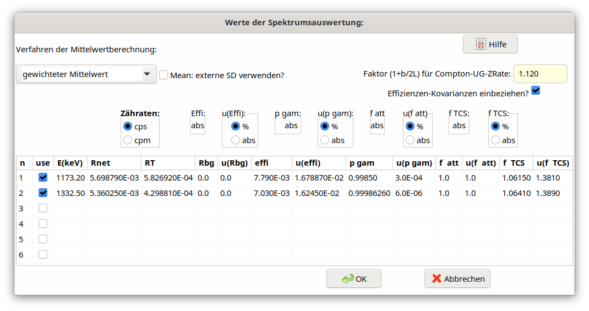

5.16. Dialog Values from spectrum evaluation¶
Within a table in this dialog for each of the gamma lines measured values of the used quantities (symbols) and their uncertainties can be input line-by-line.
It is emphasized that it is expected in the case of a naturally occurring radionuclide that from the net counting rate also the net counting rate of the corresponding background peak has already been subtracted. This must be considered also in advance when estimating the uncertainty of the net counting rate. Under this assumption the input of the net counting rate of the background peak is not necessary.
It is assumed that all necessary values and their uncertainties can be taken from the evaluation report produced by the gamma spectrometry software.
The following picture gives an overview of the structure of the dialog.
The measured values are:
Symbol names in the dialog |
Meaning |
Symbols |
|---|---|---|
Rnet |
net counting rate of the gamma line at energy \(E_{i}\), in \(s^{-1}\) |
\(R_{ni}\) |
RT |
counting rate of the integrated Compton-background in the region 1,7×Fwhm of peak i at energy \(E_{i}\), in \(s^{-1}\) |
\(R_{T}\) |
Rbg |
net counting rate of a peak at energy \(E_{i}\) in a separately measured background spectrum, in \(s^{-1}\) |
\(R_{bg}\) |
effi |
full energy peak efficiency at energy \(E_{i}\) |
\(\epsilon_{i}\) |
pgamm |
gamma emission probability of the line i |
\({p}_{\gamma i}\) |
f_att |
self-attenuation correction for energy \(E_{i}\); it is used in its multiplicative form |
\(f_{att,i}\) |
f_coin |
coincidence summing correction of the line at energy \(E_{i}\); it is used in its multiplicative form; |
\(f_{coinsu,i}\) |
The units of the net counting rates can be given in cps (\(s^{- 1}\)) or in cpm (\(\min^{- 1}\)).
The measured values have to be inserted as absolute values, not as relative values. For inserting their associated uncertainties, the radio buttons allow to choose between values in % or absolute values.
Note: Seven radio buttons were available up to the version 2.4.18; since version 2.4.19 only 5 can be used. The radio buttons for effi and pgamm were removed because their values can be supplied as absolute values only. If earlier projects are loaded, which were still defined for 7 radio buttons, the data are internally adapted to 5 buttons achieved by dividing the values of effi and pgamm by 100 if their buttons were not given as “abs”.
The activities Ai of the individual lines are calculated as follows:
\(A_{i} = R_{ni}\frac{f_{att,i\ } \cdot \ f_{coinsu,i}}{\epsilon_{i}{\ \cdot \ p}_{\gamma i}\ }\)
Furthermore, the uncertainties of the net count rates are calculated by the program according to the following equation:
\(u^{2}\left( R_{ni} \right) = \frac{R_{ni}}{tlive} + \frac{R_{T}}{tlive}f_{B} + \frac{R_{bg}}{tlive} + u^{2}\left( R_{bg} \right)\)
Herein, \(f_{B}\) is a factor which depends on how the net counting rate Rni of the peak has been evaluated. In the case of the “classical” total peak area (TPA) method, it is given by:
\(f_{B} = \left( 1 + \frac{b}{2L} \right)\)
b is the width of the peak at its base, e.g. b=1,7xFwhm, and L is the number of channels which are used on both sides of the peak for determining the count rate of the background continuum.
If, however, Rni is determined by the method of peak fitting, \(f_{B}\) may be approximated by a fixed value being „slightly larger than 1“. Then, this factor depends on the method used for peak fitting; it may be estimated by some sort of “calibration” calculations.
Within the upper part of the dialog a radio list field allows to choose the type of mean between:
Calculation of the weighted mean and its standard uncertainty,
Least-squares calculation of a weighted mean and its standard uncertainty.
Furthermore, a number field in this dialog allows inputting the value of the factor \(f_{B}\); the use of efficiency covariances can be selected or de-selected.
The gamma energies and the net counting rates and their standard uncertainties must be entered directly in the table.
In the first column of the table one can select or de-select individual gamma lines.